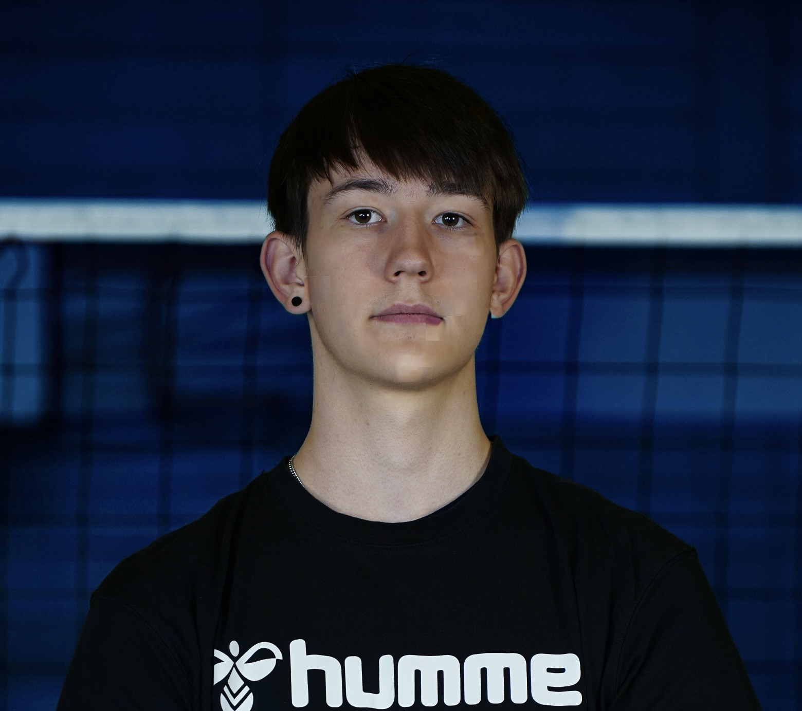

Sönke Brauch
FSJ beim SSV Volleyball Vogelstang • Öffentlichkeitsarbeit Bezirk RNO

Profil
Ich mache mein FSJ beim SSV Volleyball Vogelstang und betreue dort die Grundschulkooperation "VolleyKids" sowie verschiedene Jugendmannschaften als Co‑Trainer. Parallel dazu organisiere ich als Teil des Vorstands die Öffentlichkeitsarbeit im Schwimmsport Bezirk Rhein‑Neckar‑Odenwald.
Ende 2024 habe ich selbst mit dem Schwimmen aufgehört und spiele seitdem Wasserball beim SV Nikar Heidelberg.
Kontakt: E-Mail